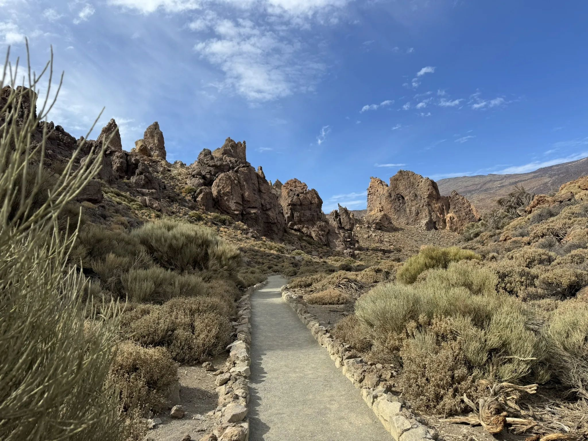
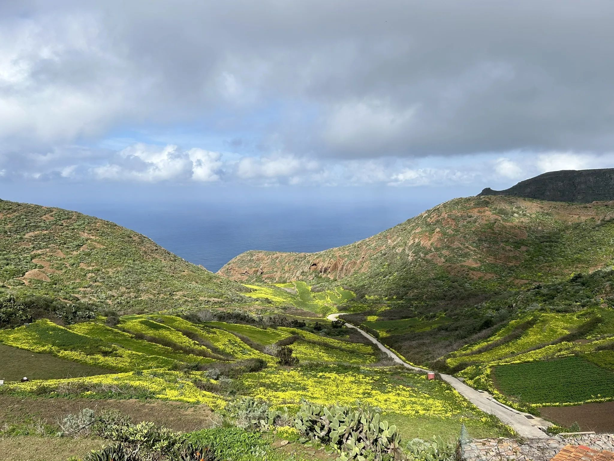
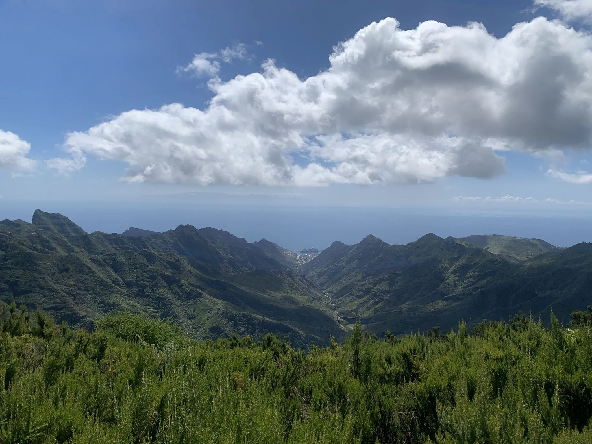

Roques de García
Discover this 3.4-km loop trail near Vilaflor, Tenerife. Generally considered a moderately challenging route. This is a very popular area for hiking, so you'll likely encounter other people while exploring. The trail is open year-round and is beautiful to visit anytime. Dogs are welcome, but must be on a leash.
Moderate :
Length: 3.4 km
Elevation Gain: 184 m

Chinyero Volcano
Discover this 8.2-km loop trail near Santiago del Teide, Tenerife. Generally considered a moderately challenging route, it takes an average of 2 h 15 min to complete. This is a very popular area for birding and hiking, so you'll likely encounter other people while exploring. The trail is open year-round and is beautiful to visit anytime.
Moderate :
Length : 8.2 km
Elevation Gain: 228 m

Cruz del Draguillo
Experience this 5.1-km loop trail near Santa Cruz de Tenerife, Tenerife. Generally considered a challenging route, it takes an average of 2 h 33 min to complete. This is a very popular area for hiking, so you'll likely encounter other people while exploring. The trail is open year-round and is beautiful to visit anytime. Dogs are welcome and may be off-leash in some areas
Length: 5.1 km
Elevation Gain: 476 m

Montaña Blanca
Discover this 10.9-km point-to-point trail near El Portillo, Tenerife. Generally considered a challenging route. This is a very popular area for birding and hiking, so you'll likely encounter other people while exploring. The trail is open year-round and is beautiful to visit anytime.
Hard :
Length: 10.9 km
Elevation Gain: 1.371 m

Chinamada
Experience this 7.6-km loop trail near San Cristóbal de La Laguna, Tenerife. Generally considered a moderately challenging route, it takes an average of 2 h 35 min to complete. This is a very popular area for birding and hiking, so you'll likely encounter other people while exploring. The best times to visit this trail are November through May.
Moderate :
Length: 7.6 km
Elevation Gain: 354 m

Mount Guajara
Head out on this 11.1-km loop trail near Vilaflor, Tenerife. Generally considered a challenging route. This is a very popular area for birding and hiking, so you'll likely encounter other people while exploring. The trail is open year-round and is beautiful to visit anytime.
Hard :
Length: 11.1 km
Elevation Gain: 690 m

Hidalgo Point
Experience this 9.5-km out-and-back trail near Tegueste, Tenerife. Generally considered a challenging route, it takes an average of 4 h 0 min to complete. This is a very popular area for hiking, so you'll likely encounter other people while exploring. The trail is open year-round and is beautiful to visit anytime.
Hard :
Length: 9.5 km
Elevation Gain: 662 m

Callejón de Teno
Head out on this 10.0-km loop trail near Buenavista del Norte, Tenerife. Generally considered a moderately challenging route. This is a very popular area for birding and hiking, so you'll likely encounter other people while exploring. The trail is open year-round and is beautiful to visit anytime.
Hard :
Length: 10 km
Elevation Gain: 580 m

Taborno Rock
Get to know this 3.9-km loop trail near Santa Cruz de Tenerife, Tenerife. Generally considered a moderately challenging route. This is a very popular area for hiking, so you'll likely encounter other people while exploring. The trail is open year-round and is beautiful to visit anytime.
Hard :
Length: 3.9 km
Elevation Gain: 216 m

Sendero de los Sentidos
Head out on this 1.3-km loop trail near Tegueste, Tenerife. Generally considered a moderately challenging route, it takes an average of 31 min to complete. This is a very popular area for walking, so you'll likely encounter other people while exploring. The trail is open year-round and is beautiful to visit anytime.
Moderate :
Length: 1.3 km
Elevation Gain: 182 m

Santiago del Teide
Check out this 8.9-km point-to-point trail near Santiago del Teide, Tenerife. Generally considered a moderately challenging route. This is a very popular area for hiking, so you'll likely encounter other people while exploring. The best times to visit this trail are November through April.
Moderate :
Length: 8.9 km
Elevation Gain: 386 m